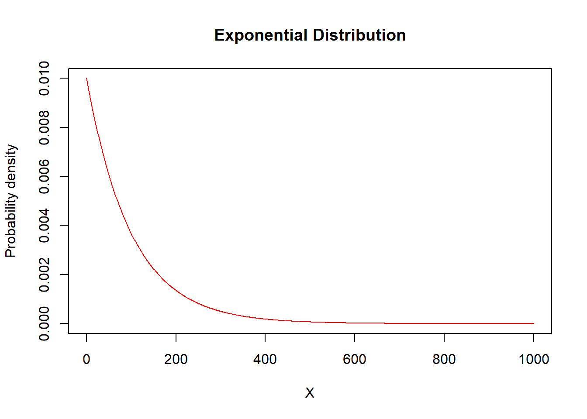
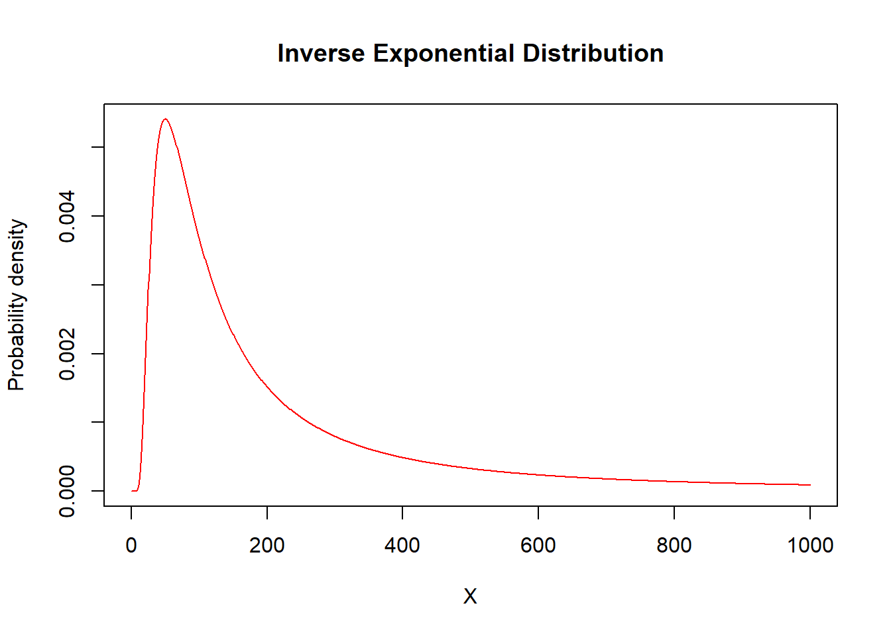
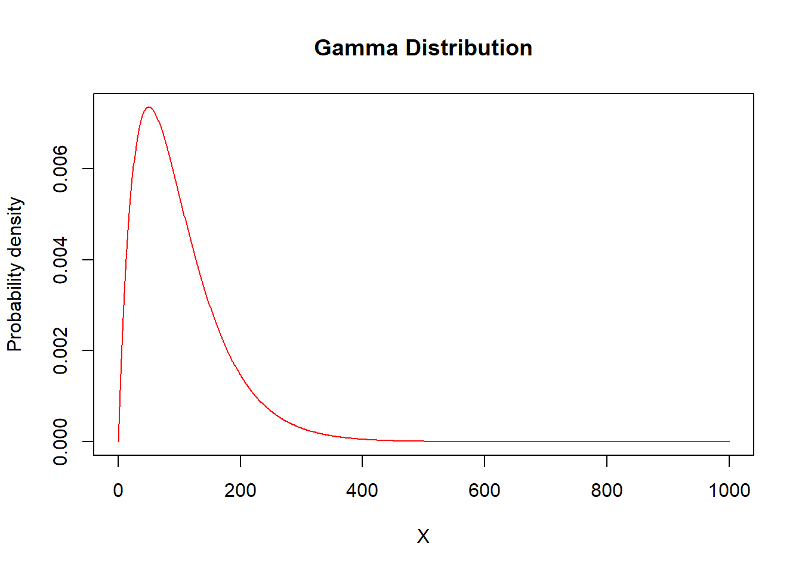
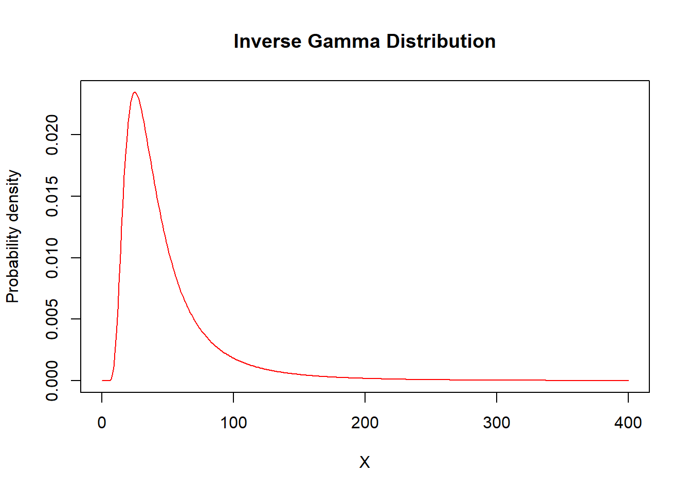
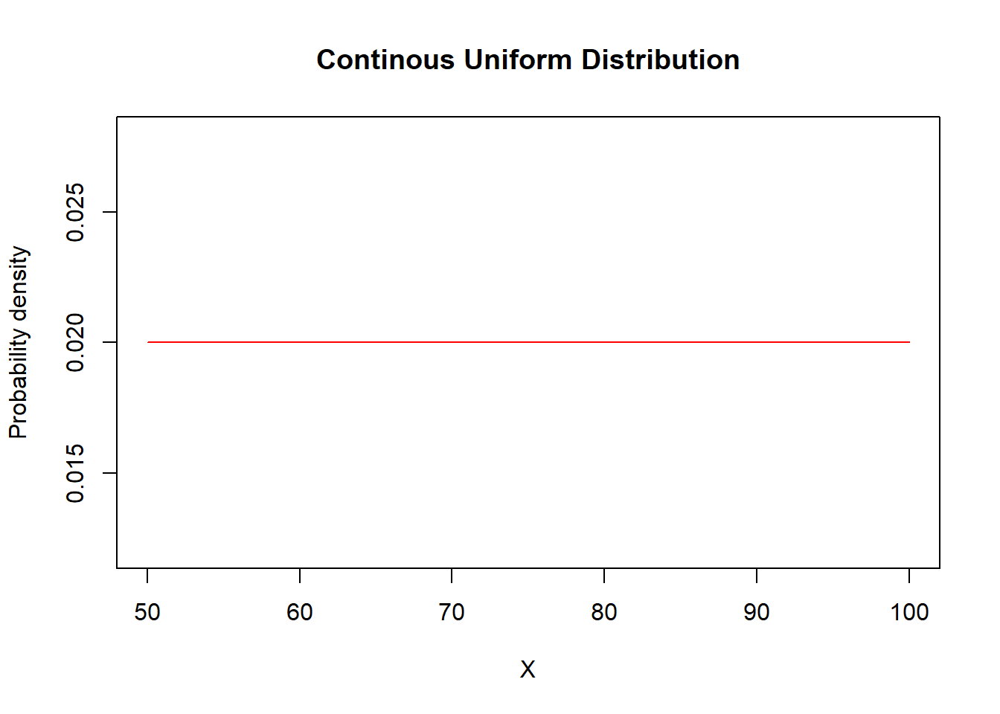
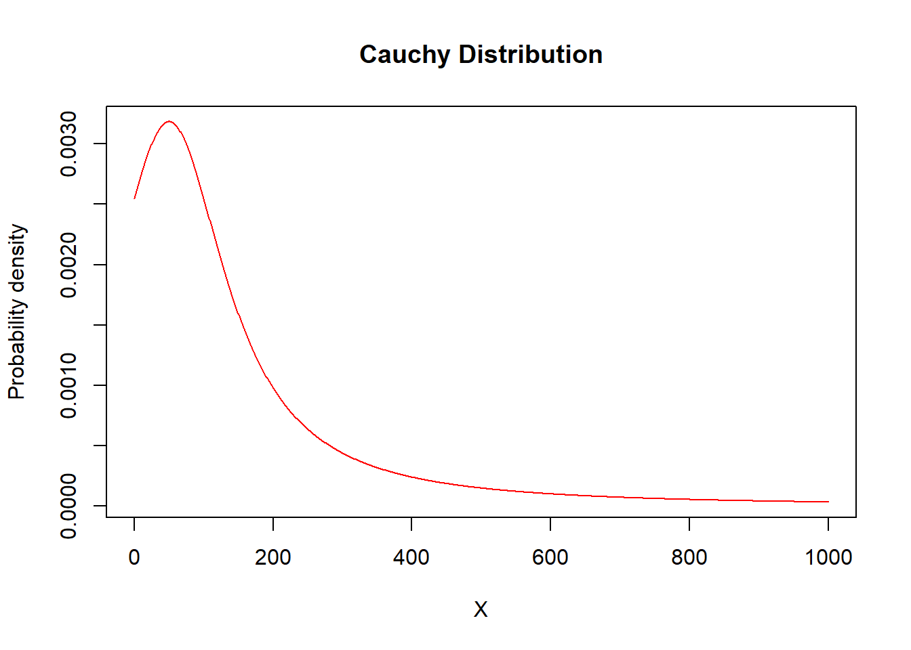
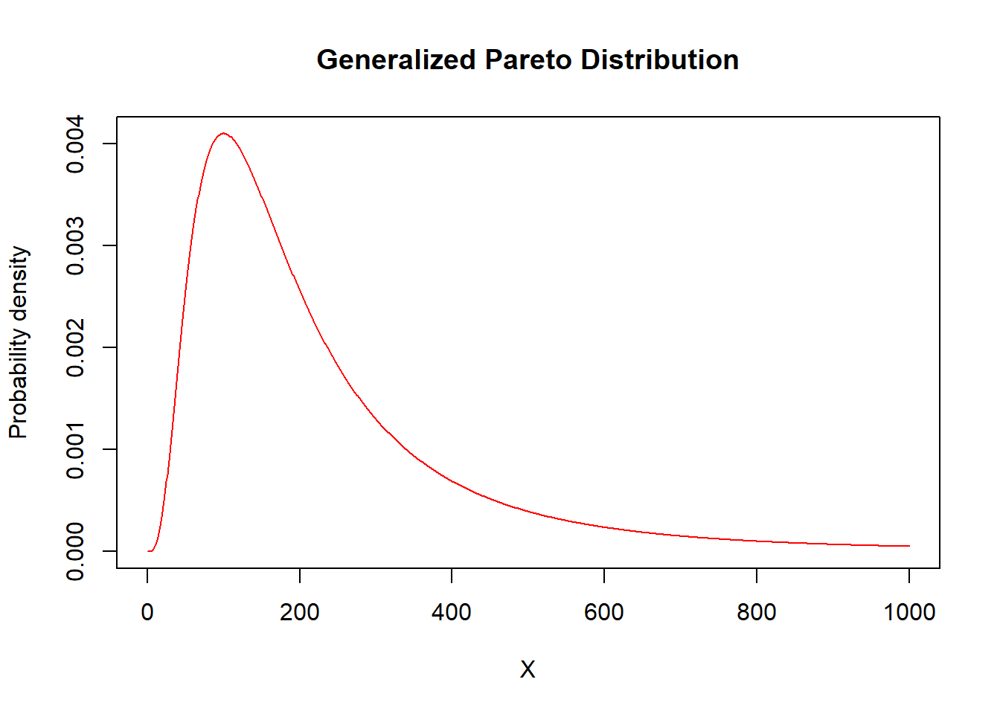

2 Continuous Distributions
Overview. This section summarizes selected continuous probability distributions used throughout Loss Data Analytics. Relevant functions, R code, and illustrative graphs are provided.
2.1 One Parameter Distributions
Exponential
Functions
\[ \begin{matrix} \begin{array}{l|c} \hline \text{Name} & \text{Function} \\ \hline \small{\text{Parameter assumptions}} & \theta>0 \\ \hline \small{\text{Probability density}} & \frac{1}{\theta}e^{-x/\theta} \\ ~~ \small{\text{function }} f(x)& \\ \hline \small{\text{Distribution function}} & 1-e^{-x/\theta} \\ ~~F(x) & \\ \hline \textit{k}^{th}~\small{\text{raw moment}} & \theta^k\Gamma(k+1) \\ ~~\mathrm{E}[X^k] & k>-1 \\ \hline VaR_p(x) & -\theta \ln (1-p) \\ \hline \small{\text{Limited Expected Value}} & \theta(1-e^{-x/\theta}) \\ ~~\mathrm{E}[X\wedge x] & \\ \hline \end{array} \end{matrix} \]
R Commands
\[ \begin{matrix} \begin{array}{l|c} \hline \text{Function Name} & \text{R Command} \\ \hline \small{\text{Density function}} & \text{dexp}(x=, rate=1/\theta) \\ \hline \small{\text{Distribution function}} & \text{pexp}(p=, rate=1/\theta) \\ \hline \small{\text{Quantile function}} & \text{qexp}(q=, rate=1/\theta) \\ \hline \small{\text{Random sampling function}} & \text{rexp}(n=, rate=1/\theta) \\ \hline \end{array} \end{matrix} \]
Illustrative Graph
theta = 100
X=seq(from = 0, to = 1000, by = 1)
plot(x=X,y=dexp(X,rate=1/theta),type="l",
ylab="Probability density",col="red",main="Exponential Distribution")
Inverse Exponential
Functions
\[ \begin{matrix} \begin{array}{l|c} \hline \text{Name} & \text{Function} \\ \hline \small{\text{Probability density}} & \frac{\theta e^{-\theta/x}}{x^2} \\ ~~ \small{\text{function }} f(x)& \\ \hline \small{\text{Distribution function}} & e^{-\theta/x} \\ ~~F(x) & \\ \hline \textit{k}^{th}~\small{\text{raw moment}} & \theta^k\Gamma(k+1) \\ ~~\mathrm{E}[X^k] & k>-1 \\ \hline \mathrm{E}[(X\wedge x)^k] & \theta^k\Gamma(k+1)\Gamma(k+1;x/\theta)+x^k e^{-x/\theta} \\ & k>-1 \\ \hline \end{array} \end{matrix} \]
R Commands
\[ \begin{matrix} \begin{array}{l|c} \hline \text{Function Name} & \text{R Command} \\ \hline \small{\text{Density function}} & \text{dinvexp}(x=, scale=\theta) \\ \hline \small{\text{Distribution function}} & \text{pinvexp}(p=, scale=\theta) \\ \hline \small{\text{Quantile function}} & \text{qinvexp}(q=, scale=\theta) \\ \hline \small{\text{Random sampling function}} & \text{rinvexp}(n=, scale=\theta) \\ \hline \end{array} \end{matrix} \]
Illustrative Graph
theta = 100
X=seq(from = 0, to = 1000, by = 1)
plot(x=X,y=dinvexp(X,scale=theta),type="l",
ylab="Probability density",col="red",main="Inverse Exponential Distribution")
2.2 Two Parameter Distributions
Pareto
Functions
\[ \begin{matrix} \begin{array}{l|c} \hline \text{Name} & \text{Function} \\ \hline \small{\text{Parameter assumptions}} & \alpha>0 \\ \hline \small{\text{Probability density}} & \frac{\alpha\theta^\alpha}{(x+\theta)^{\alpha+1}} \\ ~~ \small{\text{function }} f(x)& \\ \hline \small{\text{Distribution function}} & 1-\Big(\frac{\theta}{x+\theta}\Big)^\alpha \\ ~~F(x) & \\ \hline \textit{k}^{th}~\small{\text{raw moment}} & \frac{\theta^k\Gamma(k+1)\Gamma(\alpha-k)}{\Gamma(\alpha)} \\ ~~\mathrm{E}[X^k] & -1<\alpha<k \\ \hline \small{\text{Limited Expected Value:}}~\alpha\neq1 & \frac{\theta}{\alpha-1}\Big[1-\Big(\frac{\theta}{x+\theta}\Big)^{\alpha-1}\Big] \\ ~~\mathrm{E}[X\wedge x] & \\ \hline \small{\text{Limited Expected Value:}}~\alpha=1 & -\theta \ln \left(\frac{\theta}{x+\theta}\right) \\ ~~\mathrm{E}[X\wedge x] & \\ \hline \mathrm{E}[(X\wedge x)^k] & \frac{\theta^k\Gamma(k+1)\Gamma(\alpha-k)}{\Gamma(\alpha)}\beta(k+1,\alpha-k;\frac{x}{x+\theta})+x^k(\frac{\theta}{x+\theta})^\alpha \\ \hline \end{array} \end{matrix} \]
R Commands
\[ \begin{matrix} \begin{array}{l|c} \hline \text{Function Name} & \text{R Command} \\ \hline \small{\text{Density function}} & \text{dpareto2}(x=, shape=\alpha, scale=\theta) \\ \hline \small{\text{Distribution function}} & \text{ppareto2}(p=, shape=\alpha,scale=\theta) \\ \hline \small{\text{Quantile function}} & \text{qpareto2}(q=, shape=\alpha,scale=\theta) \\ \hline \small{\text{Random sampling function}} & \text{rpareto2}(n=, shape=\alpha,scale=\theta) \\ \hline \end{array} \end{matrix} \]
Illustrative Graph
alpha = 3
theta = 200
X=seq(from = 0, to = 1000, by = 1)
plot(x=X,y=dpareto2(X,shape=alpha,scale=theta),type="l",
ylab="Probability density",col="red",main="Pareto Distribution")
Inverse Pareto
Functions
\[ \begin{matrix} \begin{array}{l|c} \hline \text{Name} & \text{Function} \\ \hline \small{\text{Probability density}} & \frac{\tau\theta x^{\tau-1}}{(x+\theta)^\tau-1} \\ ~~ \small{\text{function }} f(x)& \\ \hline \small{\text{Distribution function}} & \Big(\frac{x}{x+\theta}\Big)^\tau \\ ~~F(x) & \\ \hline \textit{k}^{th}~\small{\text{raw moment}} & \frac{\theta^k\Gamma(\tau+k)\Gamma(1-k)}{\Gamma(\tau)} \\ ~~\mathrm{E}[X^k] & -\tau<k<1 \\ \hline \mathrm{E}[(X\wedge x)^k] & \theta^k\tau\int^{x/(x+\theta)}_0~y^{\tau+k-1}(1-y)^{-k}dy+x^k[1-\Big(\frac{x}{x+\theta}\Big)^\tau] \\ & k>-\tau \\ \hline \end{array} \end{matrix} \]
tau = 5
theta = 100
X=seq(from=0,to=3000,by=1)
plot(x=X,y=dinvpareto(X,shape=tau,scale=theta),type="l",
ylab="Probability density",col="red",main="Inverse Pareto Distribution")
R Commands
\[ \begin{matrix} \begin{array}{l|c} \hline \text{Function Name} & \text{R Command} \\ \hline \small{\text{Density function}} & \text{dinvpareto}(x=, shape=\tau, scale=\theta) \\ \hline \small{\text{Distribution function}} & \text{pinvpareto}(p=, shape=\tau,scale=\theta) \\ \hline \small{\text{Quantile function}} & \text{qinvpareto}(q=, shape=\tau,scale=\theta) \\ \hline \small{\text{Random sampling function}} & \text{rinvpareto}(n=, shape=\tau,scale=\theta) \\ \hline \end{array} \end{matrix} \]
Loglogistic
Functions
\[ \begin{matrix} \begin{array}{l|c} \hline \text{Name} & \text{Function} \\ \hline \small{\text{Parameter assumptions}} & u=\frac{(x/\theta)^\gamma}{1+(x/\theta)^\gamma} \\ \hline \small{\text{Probability density}} & \frac{\gamma(x/\theta)^\gamma}{x[1+(x/\theta)^\gamma]^2} \\ ~~ \small{\text{function }} f(x)& \\ \hline \small{\text{Distribution function}} & u \\ ~~F(x) & \\ \hline \textit{k}^{th}~\small{\text{raw moment}} & \theta^k\Gamma(1+(k/\gamma))\Gamma(1-(k/\gamma)) \\ ~~\mathrm{E}[X^k] & -\gamma<k<\gamma \\ \hline \mathrm{E}[(X\wedge x)^k] & \theta^k\Gamma(1+(k/\gamma))\Gamma(1-(k/\gamma))\beta(1+(k/\gamma),1-(k/\gamma);u)+x^k(1-u) \\ & k>-\gamma \\ \hline \end{array} \end{matrix} \]
Illustrative Graph
#need to write a f(x) for this distParalogistic
Functions
\[ \begin{matrix} \begin{array}{l|c} \hline \text{Name} & \text{Function} \\ \hline \small{\text{Parameter assumptions}} & u=\frac{1}{1+(x/\theta)^\alpha} \\ \hline \small{\text{Probability density}} & \frac{\alpha^2(x/\theta)^\alpha}{x[1+(x/\theta)^\alpha]^{\alpha+1}} \\ ~~ \small{\text{function }} f(x)& \\ \hline \small{\text{Distribution function}} & 1-u^\alpha \\ ~~F(x) & \\ \hline \textit{k}^{th}~\small{\text{raw moment}} & \frac{\theta^k\Gamma(1+(k/\alpha))\Gamma(\alpha-(k/\alpha))}{\Gamma(\alpha)} \\ ~~\mathrm{E}[X^k] & -\alpha<k<\alpha^2 \\ \hline \mathrm{E}[(X\wedge x)^k] & \frac{\theta^k\Gamma(1+(k/\alpha))\Gamma(\alpha-(k/\alpha))}{\Gamma(\alpha)}\beta(1+(k/\alpha),\alpha-(k/\alpha);1-u)+x^\alpha \\ & k>-\alpha \\ \hline \end{array} \end{matrix} \]
R Commands
\[ \begin{matrix} \begin{array}{l|c} \hline \text{Function Name} & \text{R Command} \\ \hline \small{\text{Density function}} & \text{dparalogis}(x=, shape=\alpha, scale=\theta) \\ \hline \small{\text{Distribution function}} & \text{pparalogis}(p=, shape=\alpha,scale=\theta) \\ \hline \small{\text{Quantile function}} & \text{qparalogis}(q=, shape=\alpha,scale=\theta) \\ \hline \small{\text{Random sampling function}} & \text{rparalogis}(n=, shape=\alpha,scale=\theta) \\ \hline \end{array} \end{matrix} \]
Illustrative Graph
alpha = 2
theta = 100
X=seq(from = 0, to = 1000, by = 1)
plot(x=X,y=dparalogis(X,shape=alpha,scale=theta),type="l",
ylab="Probability density",col="red",main="Paralogistic Distribution")
Gamma
Functions
\[ \begin{matrix} \begin{array}{l|c} \hline \text{Name} & \text{Function} \\ \hline \small{\text{Parameter assumptions}} & \theta>0,~\alpha>0 \\ \hline \small{\text{Probability density}} & \frac{1}{\theta^{\alpha}\Gamma(\alpha)}x^{\alpha-1}e^{-x/\theta} \\ ~~ \small{\text{function }} f(x)& \\ \hline \small{\text{Distribution function}} & \Gamma(\alpha;\frac{x}{\theta}) \\ ~~F(x) & \\ \hline \textit{k}^{th}~\small{\text{raw moment}} & \theta^k\frac{\Gamma(\alpha+k)}{\Gamma(\alpha)} \\ ~~\mathrm{E}[X^k] & k>-\alpha \\ \hline \small{\text{Limited Expected Value}} & \frac{\theta^k\Gamma(k+\alpha)}{\Gamma(\alpha)}\Gamma(k+\alpha; x/\theta)+x^k[1-\Gamma(\alpha; x/\theta)] \\ ~~\mathrm{E}[X\wedge x] & k > -\alpha \\ \hline \end{array} \end{matrix} \]
R Commands
\[ \begin{matrix} \begin{array}{l|c} \hline \small{\text{Density function}} & \text{dgamma}(x=, shape=\alpha, scale=\theta) \\ \hline \small{\text{Distribution function}} & \text{pgamma}(p=, shape=\alpha,scale=\theta) \\ \hline \small{\text{Quantile function}} & \text{qgamma}(q=, shape=\alpha,scale=\theta) \\ \hline \small{\text{Random sampling function}} & \text{rgamma}(n=, shape=\alpha,scale=\theta) \\ \hline \end{array} \end{matrix} \]
Illustrative Graph
alpha = 2
theta = 50
X=seq(from = 0, to = 1000, by = 1)
plot(x=X,y=dgamma(X,shape=alpha,scale=theta),type="l",
ylab="Probability density",col="red",main="Gamma Distribution")
Inverse Gamma
Functions
\[ \begin{matrix} \begin{array}{l|c} \hline \text{Name} & \text{Function} \\ \hline \small{\text{Probability density}} & \frac{(\theta/x)^\alpha e^{-\theta/x}}{x\Gamma(\alpha)} \\ ~~ \small{\text{function }} f(x)& \\ \hline \small{\text{Distribution function}} & 1-\Gamma(\alpha;\theta/x) \\ ~~F(x) & \\ \hline \textit{k}^{th}~\small{\text{raw moment}} & \frac{\theta^k\Gamma(\alpha-k)}{\Gamma(\alpha)} \\ ~~\mathrm{E}[X^k] & k<\alpha \\ \hline \mathrm{E}[(X\wedge x)^k] & \frac{\theta^k\Gamma(\alpha-k)}{\Gamma(\alpha)}[1-\Gamma(\alpha-k;\theta/x)]+x^k\Gamma(\alpha;\theta/x) \\ & \\ \hline \end{array} \end{matrix} \]
R Commands
\[ \begin{matrix} \begin{array}{l|c} \hline \text{Function Name} & \text{R Command} \\ \hline \small{\text{Density function}} & \text{dinvgamma}(x=, shape=\alpha, scale=\theta) \\ \hline \small{\text{Distribution function}} & \text{pinvgamma}(p=, shape=\alpha,scale=\theta) \\ \hline \small{\text{Quantile function}} & \text{qinvgamma}(q=, shape=\alpha,scale=\theta) \\ \hline \small{\text{Random sampling function}} & \text{rinvgamma}(n=, shape=\alpha,scale=\theta) \\ \hline \end{array} \end{matrix} \]
Illustrative Graph
alpha = 3
theta = 100
X=seq(from=0,to=400,by=1)
plot(x=X,y=dinvgamma(X,shape=alpha,scale=theta),type="l",
ylab="Probability density",col="red",main="Inverse Gamma Distribution")
Weibull
Functions
\[ \begin{matrix} \begin{array}{l|c} \hline \text{Name} & \text{Function} \\ \hline \small{\text{Parameter assumptions}} & x>0,\alpha>0 \\ \hline\ \small{\text{Probability density}} & \frac{\alpha \Big(\frac{x}{\theta}\Big)^\alpha e^-\Big(\frac{x}{\theta}\Big)^\alpha}{x} \\ ~~ \small{\text{function }} f(x)& \\ \hline \small{\text{Distribution function}} & 1-\exp\Big(-\Big(\frac{x}{\theta}\Big)^\alpha\Big) \\ ~~F(x) & \\ \hline \textit{k}^{th}~\small{\text{raw moment}} & \theta^k \Gamma(1 + \frac{k}{\alpha}) \\ ~~\mathrm{E}[X^k] & k>-\alpha \\ \hline \mathrm{E}[(X\wedge x)^k] & \theta^k\Gamma(1+\frac{k}{\alpha})\Gamma\Big[1+\frac{k}{\alpha};\Big(\frac{x}{\theta}\Big)^\alpha\Big]+x^k\exp\Big(-\Big(\frac{x}{\alpha}\Big)^\alpha\Big) \\ & k>-\alpha \\ \hline \end{array} \end{matrix} \]
R Commands
\[ \begin{matrix} \begin{array}{l|c} \hline \text{Function Name} & \text{R Command} \\ \hline \small{\text{Density function}} & \text{dweibull}(x=, shape=\alpha, scale=\theta) \\ \hline \small{\text{Distribution function}} & \text{pweibull}(p=, shape=\alpha,scale=\theta) \\ \hline \small{\text{Quantile function}} & \text{qweibull}(q=, shape=\alpha,scale=\theta) \\ \hline \small{\text{Random sampling function}} & \text{rweibull}(n=, shape=\alpha,scale=\theta) \\ \hline \end{array} \end{matrix} \]
Illustrative Graph
alpha = 2
theta = 100
X=seq(from = 0, to = 1000, by = 1)
plot(x=X,y=dweibull(X,shape=alpha, scale=theta),type="l",
ylab="Probability density",col="red",main="Weibull Distribution")
Inverse Weibull
Functions
\[ \begin{matrix} \begin{array}{l|c} \hline \text{Name} & \text{Function} \\ \hline \small{\text{Parameter assumptions}} & x>0,\alpha>0 \\ \hline\ \small{\text{Probability density}} & \frac{\alpha(\theta/x)^\alpha \exp^{-(\theta/x)^\alpha}}{x} \\ ~~ \small{\text{function }} f(x)& \\ \hline \small{\text{Distribution function}} & \exp\Big(-\Big(\frac{\theta}{x}\Big)^\alpha\Big) \\ ~~F(x) & \\ \hline \textit{k}^{th}~\small{\text{raw moment}} & \theta^k\Gamma(1-(k/\alpha)) \\ ~~\mathrm{E}[X^k] & k<\alpha \\ \hline \mathrm{E}[(X\wedge x)^k] & \theta^k\Gamma(1-(k/\alpha))[1-\Gamma(1(k/\alpha);(\theta/x)^\alpha)]+x^k[1-e^{-(\theta/x)^\alpha}] \\ & \\ \hline \end{array} \end{matrix} \]
R Commands
\[ \begin{matrix} \begin{array}{l|c} \hline \text{Function Name} & \text{R Command} \\ \hline \small{\text{Density function}} & \text{dinvweibull}(x=, shape=\alpha, scale=\theta) \\ \hline \small{\text{Distribution function}} & \text{pinvweibull}(p=, shape=\alpha,scale=\theta) \\ \hline \small{\text{Quantile function}} & \text{qinvweibull}(q=, shape=\alpha,scale=\theta) \\ \hline \small{\text{Random sampling function}} & \text{rinvweibull}(n=, shape=\alpha,scale=\theta) \\ \hline \end{array} \end{matrix} \]
Illustrative Graph
alpha = 5
theta = 100
X=seq(from = 0, to = 1000, by = 1)
plot(x=X,y=dinvweibull(X,shape=alpha,scale=theta),type="l",
ylab="Probability density",col="red",main="Inverse Weibull Distribution")
Uniform
Functions
\[ \begin{matrix} \begin{array}{l|c} \hline \text{Name} & \text{Function} \\ \hline \small{\text{Parameter assumptions}} & -\infty<\alpha<\beta<\infty \\ \hline \small{\text{Probability density}} & \frac{1}{\beta-\alpha} \\ \text{f(x)} & \\ \hline \small{\text{Distribution function}} & \frac{x-\alpha}{\beta-\alpha} \\ ~~F(x) & \\ \hline \text{Mean} & \frac{\beta+\alpha}{2} \\ \text{E[X]} & \\ \hline \text{Variance} & \frac{(\beta-\alpha)^2}{12} \\ E[(X-\mu)^2] & \\ \hline \mathrm{E}[(X-\mu)^k] & \mu_k=0~~~\text{for odd }\textit{k} \\ & \mu_k=\frac{(\beta-\alpha)^k}{2^k (k+1)}~~~\text{for even }\textit{k} \\ \hline \end{array} \end{matrix} \]
R Commands
\[ \begin{matrix} \begin{array}{l|c} \hline \text{Function Name} & \text{R Command} \\ \hline \small{\text{Density function}} & \text{dunif}(x=, min=a, max=b) \\ \hline \small{\text{Distribution function}} & \text{punif}(p=, min=a, max=b) \\ \hline \small{\text{Quantile function}} & \text{qunif}(q=, min=a, max=b) \\ \hline \small{\text{Random sampling function}} & \text{runif}(n=, min=a, max=b) \\ \hline \end{array} \end{matrix} \]
Illustrative Graph
alpha = 50
beta = 100
X=seq(alpha,beta,1)
plot(x=X,y=dunif(X,alpha,beta),type="l",
ylab="Probability density",col="red",main="Continous Uniform Distribution")
Normal
Functions
\[ \begin{matrix} \begin{array}{l|c} \hline \text{Name} & \text{Function} \\ \hline \small{\text{Parameter assumptions}} & -\infty<\mu<\infty,~\sigma>0 \\ \hline \small{\text{Probability density}} & \frac{1}{\sqrt{2\pi}\sigma} \exp\left( -\frac{(x-\mu)^2}{2\sigma^2}\right) \\ \text{f(x)} & \\ \hline \small{\text{Distribution function}} & \Phi\left(\frac{x-\mu}{\sigma}\right) \\ ~~F(x) & \\ \hline \text{Mean} & \mu \\ \text{E[X]} & \\ \hline \text{Variance} & \sigma^2 \\ E[(X-\mu)^2] & \\ \hline \mathrm{E}[(x-\mu)^k] & \mu_k=0~~~\text{for even k} \\ & \mu_k=\frac{k!\sigma^2}{(\frac{k}{2})! 2^{k/2}}~~~\text{for odd k} \\ \hline \end{array} \end{matrix} \]
R Commands
\[ \begin{matrix} \begin{array}{l|c} \hline \text{Function Name} & \text{R Command} \\ \hline \small{\text{Density function}} & \text{dnorm}(x=, mean=\mu, sd=\sigma) \\ \hline \small{\text{Distribution function}} & \text{pnorm}(p=, mean=\mu, sd=\sigma) \\ \hline \small{\text{Quantile function}} & \text{qnorm}(q=, mean=\mu, sd=\sigma) \\ \hline \small{\text{Random sampling function}} & \text{rnorm}(n=, mean=\mu, sd=\sigma) \\ \hline \end{array} \end{matrix} \]
Illustrative Graph
mu=100
sigma=10
X=seq(from=0,to=200,by=1)
plot(x=X,y=dnorm(X,mean=mu,sd=sigma),type="l",
ylab="Probability density",col="red",main="Normal Distribution")
Cauchy
Functions
\[ \begin{matrix} \begin{array}{l|c} \hline \text{Name} & \text{Function} \\ \hline \small{\text{Parameter assumptions}} & -\infty <\alpha <\infty, \beta>0 \\ \hline \small{\text{Probability density}} & \frac{1}{\pi\beta}[1+\left( \frac{x-\alpha}{\beta}\right)^2]^{-1} \\ ~~ \small{\text{function }} f(x)& \\ \hline \end{array} \end{matrix} \]
R Commands
\[ \begin{matrix} \begin{array}{l|c} \hline \text{Function Name} & \text{R Command} \\ \hline \small{\text{Density function}} & \text{dcauchy}(x=, location=\alpha, scale=\beta) \\ \hline \small{\text{Distribution function}} & \text{pcauchy}(p=, location=\alpha, scale=\beta) \\ \hline \small{\text{Quantile function}} & \text{qcauchy}(q=, location=\alpha, scale=\beta) \\ \hline \small{\text{Random sampling function}} & \text{rcauchy}(n=, location=\alpha, scale=\beta) \\ \hline \end{array} \end{matrix} \]
Illustrative Graph
alpha = 50
beta = 100
X=seq(from = 0, to = 1000, by = 1)
plot(x=X,y=dcauchy(X,location=alpha,scale=beta),
type="l",ylab="Probability density",col="red",main="Cauchy Distribution")
2.3 Three Parameter Distributions
Generalized Pareto
Functions
\[ \begin{matrix} \begin{array}{l|c} \hline \text{Name} & \text{Function} \\ \hline \small{\text{Parameter assumptions}} & u=\Big(\frac{x}{x+\theta}\Big) \\ \hline \small{\text{Probability density}} & \frac{\Gamma(\alpha+\tau)}{\Gamma(\alpha)\Gamma(\tau)}\frac{\theta^\alpha x^{\tau-1}}{(x+\theta)^{\alpha+\tau}} \\ ~~ \small{\text{function }} f(x)& \\ \hline \small{\text{Distribution function}} & \beta(\tau,\alpha;u) \\ ~~F(x) & \\ \hline \textit{k}^{th}~\small{\text{raw moment}} & \frac{\theta^k\Gamma(\tau+1)\Gamma(\alpha-k)}{\Gamma(\alpha)\Gamma(\tau)} \\ ~~~~\mathrm{E}[X^k] & -\tau<k<\alpha \\ \hline \mathrm{E}[(X\wedge x)^k] & \frac{\theta^k\Gamma(\tau+k)\Gamma(\alpha-k)}{\Gamma(\alpha)\Gamma(\tau)}\beta(\tau+k,\alpha-k;u)+x^k[1-\beta(\tau,\alpha,u)] \\ & k>-\tau \\ \hline \end{array} \end{matrix} \]
R Commands
\[ \begin{matrix} \begin{array}{l|c} \hline \text{Function Name} & \text{R Command} \\ \hline \small{\text{Density function}} & \text{dgenpareto}(x=, shape1=\alpha, shape2=\tau, scale=\theta) \\ \hline \small{\text{Distribution function}} & \text{pgenpareto}(q=, shape1=\alpha, shape2=\tau, scale=\theta) \\ \hline \small{\text{Quantile function}} & \text{qgenpareto}(p=, shape1=\alpha, shape2=\tau, scale=\theta) \\ \hline \small{\text{Random sampling function}} & \text{rgenpareto}(r=, shape1=\alpha, shape2=\tau, scale=\theta) \\ \hline \end{array} \end{matrix} \]
Illustrative Graph
alpha = 3
tau = 5
theta = 100
X=seq(from = 0, to = 1000, by = 1)
plot(x=X,y=dgenpareto(X,shape1=alpha,shape2=tau,scale=theta),type="l",
ylab="Probability density",col="red",main="Generalized Pareto Distribution")
Burr
Functions
\[ \begin{matrix} \begin{array}{l|c} \hline \text{Name} & \text{Function} \\ \hline \small{\text{Parameter assumptions}} & u=\frac{1}{1+(x/\theta)^\gamma} \\ \hline \small{\text{Probability density}} & \frac{\alpha\gamma(x/\theta)^\gamma}{x[1+(x/\theta)^\gamma]^{\alpha+1}} \\ ~~ \small{\text{function }} f(x)& \\ \hline \small{\text{Distribution function}} & 1-u^\alpha \\ ~~F(x) & \\ \hline \textit{k}^{th}~\small{\text{raw moment}} & \frac{\theta\Gamma(1+(k/\gamma))\Gamma(\alpha-(k/\gamma))}{\Gamma(\alpha)} \\ ~~~~\mathrm{E}[X^k] & -\gamma<k<\alpha\gamma \\ \hline \mathrm{E}[(X\wedge x)^k] & \frac{\theta\Gamma(1+(k/\gamma))\Gamma(\alpha-(k/\gamma))}{\Gamma(\alpha)}\beta(1+(k/\gamma),\alpha-(k/\gamma);1-u)+x^ku^\alpha \\ & k>-\tau \\ \hline \end{array} \end{matrix} \]
R Commands
\[ \begin{matrix} \begin{array}{l|c} \hline \text{Function Name} & \text{R Command} \\ \hline \small{\text{Density function}} & \text{dburr}(x=, shape1=\alpha, shape2=\gamma, scale=\theta) \\ \hline \small{\text{Distribution function}} & \text{pburr}(p=, shape1=\alpha, shape2=\gamma, scale=\theta) \\ \hline \small{\text{Quantile function}} & \text{qburr}(q=, shape1=\alpha, shape2=\gamma, scale=\theta) \\ \hline \small{\text{Random sampling function}} & \text{rburr}(n=, shape1=\alpha, shape2=\gamma, scale=\theta) \\ \hline \end{array} \end{matrix} \]
Illustrative Graph
alpha = 2
gamma=3
theta = 100
X=seq(from = 0, to = 1000, by = 1)
plot(x=X,y=dburr(X,shape1=alpha,shape2=gamma,scale=theta),type="l",
ylab="Probability density",col="red",main="Burr Distribution")
Inverse Burr
Functions
\[ \begin{matrix} \begin{array}{l|c} \hline \text{Name} & \text{Function} \\ \hline \small{\text{Parameter assumptions}} & u=\frac{(x/\theta)^\gamma}{1+(x/\theta)^\gamma} \\ \hline \small{\text{Probability density}} & \frac{\alpha\gamma(x/\theta)^\gamma}{x[1+(x/\theta)^\tau]^{\alpha+1}} \\ ~~ \small{\text{function }} f(x)& \\ \hline \small{\text{Distribution function}} & u^\tau \\ ~~F(x) & \\ \hline \textit{k}^{th}~\small{\text{raw moment}} & \frac{\theta^k\Gamma(1+(k/\gamma))\Gamma(\alpha-(k/\gamma))}{\tau} \\ ~~~~\mathrm{E}[X^k] & -\tau\gamma<k<\gamma \\ \hline \mathrm{E}[(X\wedge x)^k] & \frac{\theta^k\Gamma(1+(k/\gamma))\Gamma(\alpha-(k/\gamma))}{\tau}\beta(\tau+(k/\gamma),1-(k/\gamma);u)+x^k[1-u^\tau] \\ & k>-\tau \\ \hline \end{array} \end{matrix} \]
R Commands
\[ \begin{matrix} \begin{array}{l|c} \hline \text{Function Name} & \text{R Command} \\ \hline \small{\text{Density function}} & \text{dinvburr}(x=, shape1=\alpha, shape2=\tau, scale=\theta) \\ \hline \small{\text{Distribution function}} & \text{pinvburr}(p=, shape1=\alpha, shape2=\tau, scale=\theta) \\ \hline \small{\text{Quantile function}} & \text{qinvburr}(q=, shape1=\alpha, shape2=\tau, scale=\theta) \\ \hline \small{\text{Random sampling function}} & \text{rinvburr}(n=, shape1=\alpha, shape2=\tau, scale=\theta) \\ \hline \end{array} \end{matrix} \]
Illustrative Graph
alpha = 2
tau=3
theta = 100
X=seq(from = 0, to = 1000, by = 1)
plot(x=X,y=dinvburr(X,shape1=alpha,shape2=tau,scale=theta),type="l",
ylab="Probability density",col="red",main="Inverse Burr Distribution")
2.4 Four Parameter Distributions
GB2
Functions
\[ \begin{matrix} \begin{array}{l|c} \hline \text{Name} & \text{Function} \\ \hline \small{\text{Parameter assumptions}} & \beta>0 \\ \hline \small{\text{Probability density}} & \frac{a*x^{a*\alpha-1}}{b^{a*\alpha} B(\alpha,\beta)\Big[1+(x/b)^a\Big]^{\alpha+\beta}} \\ ~~ \small{\text{function }} f(x) & \\ \hline \textit{k}^{th}~\small{\text{raw moment}} & \frac{b^k\Big(\alpha+\frac{k}{a},\beta-\frac{k}{a}\Big)}{(\alpha,\beta)} \\ ~~~~\mathrm{E}[X^k] & \textit{k}>0 \\ \hline \end{array} \end{matrix} \]
R Commands
\[ \begin{matrix} \begin{array}{l|c} \hline \text{Function Name} & \text{R Command} \\ \hline \small{\text{Density function}} & \text{insert text}(x=,) \\ \hline \small{\text{Distribution function}} & \text{insert text}(q=,) \\ \hline \small{\text{Quantile function}} & \text{insert text}(p=,) \\ \hline \small{\text{Random sampling function}} & \text{insert text}(r=,) \\ \hline \end{array} \end{matrix} \]
Illustrative Graph
#Need Density function and respective packages for graph2.5 Other Distributions
Lognormal
Functions
\[ \begin{matrix} \begin{array}{l|c} \hline \text{Name} & \text{Function} \\ \hline \small{\text{Parameter assumptions}} & -\infty <\mu <\infty, \sigma>0 \\ \hline \small{\text{Probability density}} & \frac{1}{x\sqrt{2\pi}\sigma} \exp\left( -\frac{(\ln x-\mu)^2}{2\sigma^2}\right) \\ ~~ \small{\text{function }} f(x)& \\ \hline \small{\text{Distribution function}} & \Phi\left(\frac{\ln (x)-\mu}{\sigma}\right) \\ ~~F(x) & \\ \hline \textit{k}^{th}~\small{\text{raw moment}} & \exp(k\mu+\frac{k^2\sigma^2}{2}) \\ ~~\mathrm{E}[X^k] & k>-a \\ \hline \small{\text{Limited Expected Value}} & \exp\Big(k\mu+\frac{k^2\sigma^2}{2}\Big)\Phi\Big(\frac{\ln (x)-\mu-k\sigma^2}{\sigma}\Big)+x^k\Big[1-\Phi\Big(\frac{\ln (x)-\mu}{\sigma}\Big)\Big] \\ ~~\mathrm{E}[X\wedge x] & \\ \hline \end{array} \end{matrix} \]
Illustrative Graph
dlognorm=function(x,mu,sigma){
p=(1/(x*sigma*sqrt(2*pi)))*exp(-((log(x)-mu)/sigma)^2)
return(p)
}
mu = 20
sigma = 12
X=seq(from = 0, to = 1000, by = 1)
plot(x=X,y=dlognorm(X,mu=mu,sigma=sigma),type="l",col="red")
Inverse Gaussian
Functions
\[ \begin{matrix} \begin{array}{l|c} \hline \text{Name} & \text{Function} \\ \hline \small{\text{Parameter assumptions}} & z=\frac{x-\mu}{\mu}~,~y=\frac{x+\mu}{\mu} \\ \hline \small{\text{Probability density}} & \Big(\frac{\theta}{2\pi x^3}\Big)^{1/2}\exp\Big(\frac{\theta z^2}{2x}\Big) \\ ~~ \small{\text{function }} f(x)& \\ \hline \small{\text{Distribution function}} & \Phi\Big[z\Big(\frac{\theta}{x}\Big)^{1/2}\Big]+\exp\Big(\frac{2\theta}{\mu}\Big)\Phi\Big[-y\Big(\frac{\theta}{x}\Big)^{1/2}\Big] \\ ~~F(x) & \\ \hline \text{Mean} & \mu \\ \mathrm{E}[X] & \\ \hline \mathrm{Var[X]} & \frac{\mu^3}{\theta}\\ \hline \mathrm{E}[(X\wedge x)^k] & x-\mu x\Phi\Big[z\Big(\frac{\theta}{x}\Big)^{1/2}\Big]-(\mu y)\exp\Big(\frac{2\theta}{\mu}\Big)\Phi\Big[-y\Big(\frac{\theta}{x}\Big)^{1/2}\Big] \\ & \\ \hline \end{array} \end{matrix} \]
R Commands
\[ \begin{matrix} \begin{array}{l|c} \hline \text{Function Name} & \text{R Command} \\ \hline \small{\text{Density function}} & \text{dinvgauss}(x=, mean=\mu,dispersion=\theta) \\ \hline \small{\text{Distribution function}} & \text{pinvgauss}(p=, mean=\mu,dispersion=\theta) \\ \hline \small{\text{Quantile function}} & \text{qinvgauss}(q=, mean=\mu,dispersion=\theta) \\ \hline \small{\text{Random sampling function}} & \text{rinvgauss}(n=, mean=\mu,dispersion=\theta) \\ \hline \end{array} \end{matrix} \]
Illustrative Graph
mu=100
theta = 1000
X=seq(from=0,to=100,by=1)
plot(x=X,y=dinvgauss(X,mean=mu,dispersion=theta),type="l",
ylab="Probability density",col="red",main="Inverse Gaussian Distribution")
Single Parameter Pareto
Functions
\[ \begin{matrix} \begin{array}{l|c} \hline \text{Name} & \text{Function} \\ \hline \small{\text{Parameter assumptions}} & \theta~\text{is known.}~,~x>\theta \\ \hline \small{\text{Probability density}} & \frac{\alpha\theta^\alpha}{x^{\alpha+1}} \\ ~~ \small{\text{function }} f(x)& \\ \hline \small{\text{Distribution function}} & 1-(\theta/x)^\alpha \\ ~~F(x) & \\ \hline \textit{k}^{th}~\small{\text{raw moment}} & \frac{\alpha\theta^k}{\alpha-k} \\ ~~\mathrm{E}[X^k] & \\ \hline \mathrm{E}[(X\wedge x)^k] & \frac{\alpha\theta^k}{\alpha-k}-\frac{k\theta^k}{(\alpha-k)x^{\alpha-k}} \\ & x \geq\theta \\ \hline \end{array} \end{matrix} \]
R Commands
\[ \begin{matrix} \begin{array}{l|c} \hline \text{Function Name} & \text{R Command} \\ \hline \small{\text{Density function}} & \text{dpareto1}(x=, shape=\alpha,min=\theta) \\ \hline \small{\text{Distribution function}} & \text{ppareto1}(p=, shape=\alpha,min=\theta) \\ \hline \small{\text{Quantile function}} & \text{qpareto1}(q=, shape=\alpha,min=\theta) \\ \hline \small{\text{Random sampling function}} & \text{rpareto1}(n=, shape=\alpha,min=\theta) \\ \hline \end{array} \end{matrix} \]
Illustrative Graph
alpha = 3
theta = 100
X=seq(from = 0, to = 1000, by = 1)
plot(x=X,y=dpareto1(X,shape=alpha,min=theta),type="l",
ylab="Probability density",col="red",main="Single Parameter Pareto Distribution")
2.6 Distributions with Finite Support
Beta
Beta Functions
\[ \begin{matrix} \begin{array}{l|c} \hline \text{Name} & \text{Function} \\ \hline \small{\text{Parameter assumptions}} & u=\frac{x}{\theta},~a>0,~b>0,~0<x<\theta \\ \hline \small{\text{Probability density}} & \frac{\Gamma(a+b)}{\Gamma(a)\Gamma(b)} u^a(1-u)^{b-1}\frac{1}{x} \\ ~~ \small{\text{function }} f(x)& \\ \hline \small{\text{Distribution function}} & \beta(a,b;u) \\ ~~F(x) & \\ \hline \textit{k}^{th}~\small{\text{raw moment}} & \frac{\theta^k \Gamma(a+b)\Gamma(a+k)}{\Gamma(a)\Gamma(a+b+1)} \\ ~~\mathrm{E}[X^k] & k>-a \\ \hline \small{\text{Limited Expected Value}} & \frac{\theta^k a(a+1)\cdots(a+k-1)}{(a+b)(a+b+1)\cdots(a+b+k-1)}\beta(a+k,b;u)+x^k[1-\beta(a,b;u)] \\ ~~\mathrm{E}[X\wedge x] & k > -\alpha \\ \hline \end{array} \end{matrix} \]
R Commands
\[ \begin{matrix} \begin{array}{l|c} \hline \text{Function Name} & \text{R Command} \\ \hline \small{\text{Density function}} & \text{dbeta}(x=, shape1=a,shape2=b,ncp=\theta) \\ \hline \small{\text{Distribution function}} & \text{pbeta}(p=, shape1=a,shape2=b,ncp=\theta) \\ \hline \small{\text{Quantile function}} & \text{qbeta}(q=, shape1=a,shape2=b,ncp=\theta) \\ \hline \small{\text{Random sampling function}} & \text{rbeta}(n=, shape1=a,shape2=b,ncp=\theta) \\ \hline \end{array} \end{matrix} \]
a = 2
b = 4
theta = 1
X=seq(from=0,to=1,by=.0001)
plot(x=X,y=dbeta(X,shape1=a,shape2=b,ncp=theta),type="l",
ylab="Probability density",col="red",main="Beta Distribution")
Generalized Beta
Functions
\[ \begin{matrix} \begin{array}{l|c} \hline \text{Name} & \text{Function} \\ \hline \small{\text{Parameter assumptions}} & 0<x<\theta~,~u=(x/\theta)^\tau \\ \hline \small{\text{Probability density}} & \frac{\Gamma(a+b)}{\Gamma(a)\Gamma(b)}u^\alpha(1-u)^{b-1}\frac{\tau}{x} \\ ~~ \small{\text{function }} f(x)& \\ \hline \small{\text{Distribution function}} & \beta(a,b;u) \\ ~~F(x) & \\ \hline \textit{k}^{th}~\small{\text{raw moment}} & \frac{\theta^k\Gamma(a+b)\Gamma(a+(k/\tau))}{\Gamma(a)\Gamma(a+b+(k/\tau))} \\ ~~\mathrm{E}[X^k] & k>-\alpha\tau \\ \hline \mathrm{E}[(X\wedge x)^k] & \frac{\theta^k\Gamma(a+b)\Gamma(a+(k/\tau))}{\Gamma(a)\Gamma(a+b+(k/\tau))}\beta(a+(k/\tau),b;u)+x^k[1-\beta(a,b;u)] \\ \hline \end{array} \end{matrix} \]
R Commmands
\[ \begin{matrix} \begin{array}{l|c} \hline \text{Function Name} & \text{R Command} \\ \hline \small{\text{Density function}} & \text{dgenbeta}(x=, shape1=a,shape2=b,shape3=\tau,scale=\theta) \\ \hline \small{\text{Distribution function}} & \text{pgenbeta}(p=, shape1=a,shape2=b,shape3=\tau,scale=\theta) \\ \hline \small{\text{Quantile function}} & \text{qgenbeta}(q=, shape1=a,shape2=b,shape3=\tau,scale=\theta) \\ \hline \small{\text{Random sampling function}} & \text{rgenbeta}(n=, shape1=a,shape2=b,shape3=\tau,scale=\theta) \\ \hline \end{array} \end{matrix} \]
Illustrative Graph
a = 3
b = 5
tau = 2
theta = 1000
X=seq(from = 0, to = 1000, by = 1)
plot(x=X,y=dgenbeta(X,shape1=a,shape2=b,shape3=tau,scale=theta),type="l",
ylab="Probability density",col="red",main="Generalized Beta Distribution")